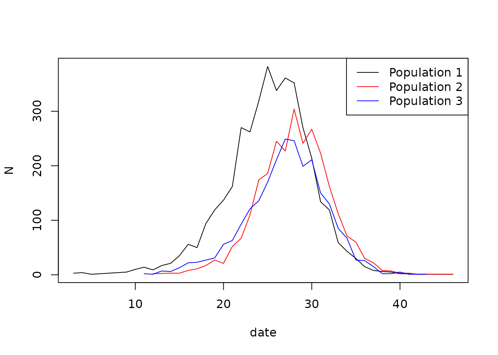

Introduction
This vignette shows how to create a mixing model using the
epiworldR package. Mixing models feature multiple
populations. Each group, called Entities, has a subset of
the agents. The agents can interact with each other within the same
group and with agents from other groups. A contact matrix defines the
interaction between agents.
An SEIR model with mixing
For this example, we will simulate an outbreak featuring three populations. The contact matrix is defined as follows:
This matrix represents the probability of an agent from population interacting with an agent from population . The matrix is row-stochastic, meaning that the sum of each row is equal to 1.
We will build this model using the entity class in
epiworld. The following code chunk instantiates three entities and the
contact matrix.
library(epiworldR)
e1 <- entity("Population 1", 3e3, as_proportion = FALSE)
e2 <- entity("Population 2", 3e3, as_proportion = FALSE)
e3 <- entity("Population 3", 3e3, as_proportion = FALSE)
# Row-stochastic matrix (rowsums 1)
cmatrix <- c(
c(0.9, 0.05, 0.05),
c(0.1, 0.8, 0.1),
c(0.1, 0.2, 0.7)
) |> matrix(byrow = TRUE, nrow = 3)With these in hand, we can proceed to create a mixing model. The following code chunk creates a model, an SEIR with mixing, and adds the entities to the model:
N <- 9e3
flu_model <- ModelSEIRMixing(
name = "Flu",
n = N,
prevalence = 1 / N,
contact_rate = 20,
transmission_rate = 0.1,
recovery_rate = 1 / 7,
incubation_days = 7,
contact_matrix = cmatrix
)
# Adding the entities
flu_model |>
add_entity(e1) |>
add_entity(e2) |>
add_entity(e3)The function add_entity adds the corresponding entity.
The default behavior randomly assigns agents to the entities at the
beginning of the simulation. Agents may be assigned to more than one
entity. The following code-chunk simulates the model for 100 days,
summarizes the results, and plots the incidence curve:
set.seed(331)
run(flu_model, ndays = 100)
#> _________________________________________________________________________
#> Running the model...
#> ||||||||||||||||||||||||||||||||||||||||||||||||||||||||||||||||||||||||| done.
#> done.
summary(flu_model)
#> ________________________________________________________________________________
#> ________________________________________________________________________________
#> SIMULATION STUDY
#>
#> Name of the model : Susceptible-Exposed-Infected-Removed (SEIR) with Mixing
#> Population size : 9000
#> Agents' data : (none)
#> Number of entities : 3
#> Days (duration) : 100 (of 100)
#> Number of viruses : 1
#> Last run elapsed t : 108.00ms
#> Last run speed : 8.29 million agents x day / second
#> Rewiring : off
#>
#> Global events:
#> - Update infected individuals (runs daily)
#>
#> Virus(es):
#> - Flu
#>
#> Tool(s):
#> (none)
#>
#> Model parameters:
#> - Avg. Incubation days : 7.0000
#> - Contact rate : 20.0000
#> - Prob. Recovery : 0.1429
#> - Prob. Transmission : 0.1000
#>
#> Distribution of the population at time 100:
#> - (0) Susceptible : 8999 -> 137
#> - (1) Exposed : 1 -> 35
#> - (2) Infected : 0 -> 139
#> - (3) Recovered : 0 -> 8689
#>
#> Transition Probabilities:
#> - Susceptible 0.96 0.04 0.00 0.00
#> - Exposed 0.00 0.84 0.16 0.00
#> - Infected 0.00 0.00 0.86 0.14
#> - Recovered 0.00 0.00 0.00 1.00
plot_incidence(flu_model)Investigating the history
After running the simulation, a possible question is: how many agents from each entity were infected each day? The following code chunk retrieves the agents from each entity and the transmissions that occurred during the simulation:
library(data.table)
agents_entities <- lapply(get_entities(flu_model), \(e) {
entity_get_agents(e)
}) |> rbindlist()
head(agents_entities)
#> agent entity
#> <int> <int>
#> 1: 507 0
#> 2: 1710 0
#> 3: 8984 0
#> 4: 7844 0
#> 5: 760 0
#> 6: 4379 0We can retrieve the daily incidence for each entity by merging the transmissions with the agents’ entities. The following code chunk accomplishes this:
# Retrieving the transmissions
transmissions <- get_transmissions(flu_model) |>
data.table()
# We only need the date and the source
transmissions <- subset(
transmissions,
select = c("date", "source")
)
# Attaching the entity to the source
transmissions <- merge(
transmissions,
agents_entities,
by.x = "source", by.y = "agent"
)
# Aggregating by date x entity (counts)
transmissions <- transmissions[, .N, by = .(date, entity)]
# Taking a look at the data
head(transmissions)
#> date entity N
#> <int> <int> <int>
#> 1: 75 1 12
#> 2: 47 0 114
#> 3: 51 0 133
#> 4: 52 0 152
#> 5: 47 2 74
#> 6: 48 2 87With this information, we can now visualize the daily incidence for each entity. The following code chunk plots the daily incidence for each entity:
setorder(transmissions, date, entity)
ran <- range(transmissions$N)
transmissions[entity == 0, plot(
x = date, y = N, type = "l", col = "black", ylim = ran)]
#> NULL
transmissions[entity == 1, lines(x = date, y = N, col = "red")]
#> NULL
transmissions[entity == 2, lines(x = date, y = N, col = "blue")]
#> NULL
legend(
"topright",
legend = c("Population 1", "Population 2", "Population 3"),
col = c("black", "red", "blue"),
lty = 1
)